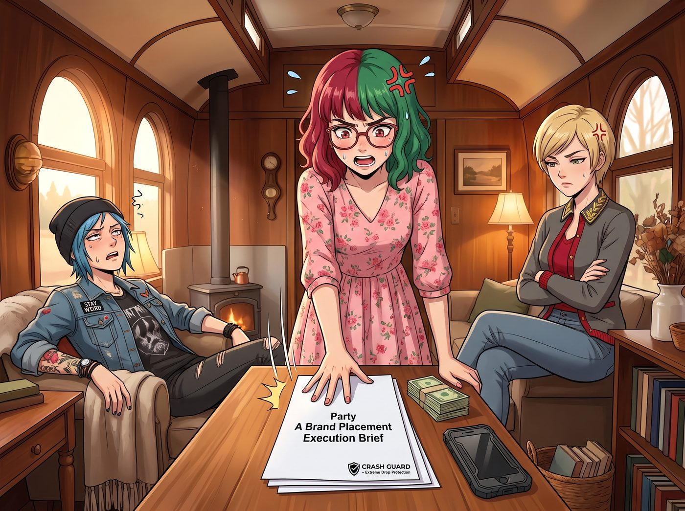

人質劫持式測評

第一筆五千美元的「金主爸爸」預付款打入營地帳戶時，殘酷的商業現實立刻給這群剛嘗到甜頭的新晉網紅上了一課。
與 YouTube 官方那種自動插播、不需要創作者露臉的貼片廣告不同，這種直接對接的「工商（業配）」合約裡，寫滿了令老錢名媛和街頭龐克同時感到窒息的硬性紅線（Red Lines）。
Lily 將一份長達三頁的《甲方品牌植入執行簡報》列印出來，拍在會客區的桌子上。這次的金主是一家主打「極限防摔」的手機殼品牌。
「根據合約條款，」Lily 推了推眼鏡，無情地宣讀著規則，「植入時長不得低於 60 秒；必須由主要出鏡人物親口念出品牌名稱三次；必須清晰口播三大營銷賣點：『軍規防摔、納米防水、親膚手感』；最後，必須對著鏡頭展示產品全貌，並附帶一個『真誠且熱情的推薦微笑』。」
車廂裡陷入了死一般的沉寂。
「妳讓我對著鏡頭，舉著一個售價 29.9 美元的塑膠殼……微笑？！」Victoria 的聲音高了八度，彷彿聽到了什麼極端褻瀆的髒話。「我是 Chase 家族的繼承人！我十三歲時連寶格麗的晚宴都懶得笑！這是在踐踏我的靈魂和品味！」
「老娘也不幹！」Chloe 雙手抱胸，滿臉寫著「龐克永不妥協」的桀驁不馴，「我渾身上下都是反建制的無政府主義刺青，妳現在要我像個電視購物頻道的蠢貨一樣，對著鏡頭念什麼『親膚手感』？我的街頭信譽會徹底破產的！我寧願去海裡釣一萬次海帶！」
兩個人互相瞪著對方，誰都拉不下這個面子。在「死要面子」這件事上，頂級富二代和底層不良少女達成了奇妙的共識。
「違約金是預付款的三倍，也就是一萬五千美元。」Lily 平靜地喝了一口牛奶，看著她們，「如果兩位學姐無法履行合約，我將不得不拍賣 Victoria 學姐貨櫃裡的兩條高定裙子，以及 Chloe 學姐那台 ATV 的引擎來抵債。」
這句話成了壓垮駱駝的最後一根稻草。
十分鐘後，在 Max 的鏡頭前，影史最荒謬、最充滿怨氣的工商口播誕生了。
她們完美利用了頻道「沙雕互毆」的調性，將這場業配變成了一次「人質劫持式暴力測評」。
畫面中，Chloe 像個戰俘一樣被綁在工坊的承重柱上，腦門上貼著一張寫著品牌名字的便利貼。她面無表情、生無可戀地盯著提詞機，用一種毫無感情起伏的 AI 語音棒讀著： 「這款手機殼擁有……該死的軍規級防護。不管妳遇到什麼樣的瘋婆子，它都能保護妳的手機……」
話音剛落，畫面外的 Victoria 舉著一根接在水龍頭上的花園水管，對著 Chloe 的臉就是一頓狂呲，伴隨著她狂躁的怒吼：「測評開始！看看妳的破手機防不防水！！」
「呸！咕嚕嚕……它非常防水！」Chloe 一邊吐著嘴裡的水，一邊被激怒了，開始對著鏡頭破口大罵，「而且它的手感……簡直比這頭老錢土撥鼠的臉皮還要『親膚』！！」
緊接著，Victoria 為了測試「極限防摔」，直接把裝著手機的手機殼像手榴彈一樣，狠狠地砸向 Chloe 的腦袋（當然，Max 在開拍前偷偷換成了廢棄的空機模）。手機殼砸在 Chloe 戴著的越野安全帽上彈開，完好無損。
「時間到，62 秒，品牌名稱提及三次，賣點全部覆蓋，合規通過。」鏡頭外傳來 Lily 按下碼錶的冷靜聲音。
「現在……根據合約，給我一個真誠的推薦微笑，垃圾熊。」Victoria 拿著水管，露出反派的笑容。
畫面最後定格在 Chloe 滿臉水漬、咬牙切齒地對著鏡頭擠出一個比哭還難看、彷彿要殺人般的「真誠微笑」上。
這支名為《用花園水管和鋼鐵腦袋測試地表最強手機殼》的工商影片一經發布，不僅沒有因為打廣告而掉粉，反而因為這種「極度敷衍卻又極度硬核」的恰飯姿態，迎來了流量的第二次大爆發。
甲方爸爸甚至在評論區高亮留言：「我們從沒見過對待產品和念稿如此充滿攻擊性的網紅，但銷量確實在一個小時內翻了三倍。請繼續保持妳們的仇恨！」
金錢的誘惑與合約的底線，就這樣在二號車廂裡，被轉化為了一場沒有尊嚴但極度好笑的行為藝術。誰都沒有丟臉，因為她們把「念稿」這件事本身，變成了一場對消費主義的龐克式嘲弄。